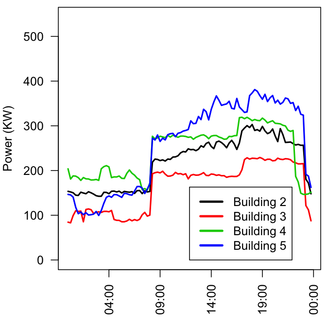

Introduction
The Tessera team presented an interactive demo at the 2015 Conference on Statistical Practice in New Orleans on February 21, 2015.
There were three demonstration activities involving different data sets:
- Housing sales
- Power utilization in retail buildings
- Computer network traffic
Each demonstration contains four components:
- A description of the data set
- Simple code for launching a pre-created
trelliscopeview you can use to explore the data - A set of challenge questions to guide your exploration of the data
- The R code used to create the
trelliscopeview
These three demos are documented on this site, and you can run them on your own if you like. To do so, you will first need to install some of the Tessera tools
Download Demo Materials
To run these demonstrations, you will first need to install R along with a local installation of Tessera. A local installation means that Tessera can run on your own computer without requiring a computational backend like Hadoop.
Installation of R and Tessera
If you do not already have the most recent version of R, please download and install it here: http://cran.r-project.org.
Optional: You may find the RStudio development environment an easier way to program in R, but it is not necessary. You may download it here: http://www.rstudio.com.
Open R and execute the following commands to install Tessera and other libraries you'll need for the demos:
install.packages(c("devtools", "plyr", "maps")) library(devtools) install_github("tesseradata/datadr") install_github("tesseradata/trelliscope") install_github("hafen/housingData")For Windows users: when installing
devtools, you may notice a warning like the following:> library(devtools) WARNING: Rtools is required to build R packages, but no version of Rtools compatible with R 3.1.2 was found. (Only the following incompatible version(s) of Rtools were found:3.2) Please download and install Rtools 3.1 from http://cran.r-project.org/bin/windows/Rtools/ and then run find_rtools().For Mac users: when installing
devtools, you may notice a similar warning indicating thatXcodeis required.For both Windows and Mac users, you can ignore these warnings because the Tessera packages do not include C or Fortran code that requires compilation.
You will need the Firefox or Chrome browser installed on your computer. Internet Explorer and Safari sometimes have problems displaying Trelliscope views.
Download demonstration files
Download the CSP Tessera demo files and unzip them on your computer: Tessera_demo_CSP2015.zip
The zip file contains a folder called demos. Set your working directory in R to this folder, using something like
setwd("mypaths_to_demos/demos"). The demos folder contains a folder for each of the three demos: power_demo, housing_demo, and netflow_demo. Each demonstration folder has a single .R file which contains the code for the demonstration. Open that file in your editor of choice and begin!
Data Description - Housing
The housing dataset contains data about housing sales aggregated to the
county level in the United States between 2008-10-01 and 2014-03-01. This
is Zillow.com data provided by Quandl.
The data variables are as follows:
| Variable | Description |
|---|---|
| fips | Federal Information Processing Standard, a 5 digit count code |
| county | US county name |
| state | US state name |
| time | date (the data is aggregated monthly) |
| nSold | number sold this month |
| medListPriceSqft | median list price per square foot |
| medSoldPriceSqft | median sold price per square foot |
Trelliscope View - Housing
The datadr, trelliscope, and housingData packages need to be imported for the following demo. Make sure to set the working directory to the location of the housing demo visual data base (vdb) directory. This will allow you to connect to the data base and interact with the trelliscope output.
# Load necessary libraries.
library(datadr)
library(trelliscope)
library(housingData)
# Set the working directory. You will need to provide the complete file path.
setwd("housing_demo")
# Remove any left-over objects in the Global environment
rm(list = ls())
The following will launch two pre-made trelliscope displays:
- median list/sold price per sq ft vs time
- median list/sold price per sq ft vs time by state
Each panel represents the median listed (blue) and sold (pink) housing value plotted over time. Note that some of the panels only have one of the two values. The purpose of looking at pre-made displays is to get the user acquainted with the trelliscope interface. We encourage you to explore the data and search for trends and anomalies.
# To see the Trelliscope output, execute this block of code. We will
# go into further details below about how to set up your own Trelliscope
# visual data base.
vdbConn("vdb_housing", autoYes = TRUE)
# use this when running locally on your own computer
myport <- 8100
# myport <- Sys.getenv("TR_PORT") # use this on demo cluster
view(port = myport)
Challenge Questions - Housing
Now that you have the trelliscope display open, we have a few challenge questions that we would like to see if you can answer. No one's grading you on this task. In order to familiarize yourself with the interface and get a sense of the power of the trelliscope package, see if you can answer the following set of questions:
Can you find the county with the largest positive slope in list price per square foot? Can you find the county with the largest negative slope? (Hint: use the Table Sort/Filter or Univariate Filter.)
Can you find the state that has the largest range of county trends in list price? (Hint: use the Bivariate Filter.)
Can you find the county with the largest increasing price trend in the South? (Hint: use the Table Sort/Filter to filter first.)
Code to Create Trelliscope View - Housing
This activity will teach you how to create your own trelliscope displays as well as some basic functionality of the datadr package using the housing data set. We will be using the same data from the pre-made displays, but now you will be writing the code to generate the output. We will begin by importing the necessary packages and create our first distributed data frame using the divide() function from datadr.
# If you have not already done so, import the necessary packages
library(datadr)
library(trelliscope)
library(housingData)
# Take a peek at the first 6 rows of housing
head(housing)
fips county state time nSold medListPriceSqft
1 06001 Alameda County CA 2008-10-01 NA 307.9787
2 06001 Alameda County CA 2008-11-01 NA 299.1667
3 06001 Alameda County CA 2008-11-01 NA NA
4 06001 Alameda County CA 2008-12-01 NA 289.8815
5 06001 Alameda County CA 2009-01-01 NA 288.5000
6 06001 Alameda County CA 2009-02-01 NA 287.0370
medSoldPriceSqft
1 325.8118
2 NA
3 318.1150
4 305.7878
5 291.5977
6 NA
# Let's get a sense of the dimensions of our data frame
dim(housing)
We are going to divide the data set by the variables "county" and "state". This kind of data division is very similar to the functionality provided by the plyr package.
# We will create a distributed data frame by dividing our data by county and state
byCounty <- divide(housing, by = c("county", "state"), update = TRUE)
# byCounty is a Divided Data Frame one of the primary data types in datadr
class(byCounty)
Calling the distributed data frame (ddf()) that was just created lets the user know the size of the object in terms of memory and other metadata specific to the object. In this ddf, each element is itself a data frame.
# Look at byCounty object
byCounty
Distributed data frame backed by 'kvMemory' connection
attribute | value
----------------+-----------------------------------------------------------
names | fips(cha), time(Dat), nSold(num), and 2 more
nrow | 224369
size (stored) | 16.45 MB
size (object) | 16.45 MB
# subsets | 2883
* Other attributes: getKeys(), splitSizeDistn(), splitRowDistn(), summary()
* Conditioning variables: county, state
# Look at first division. It will consist of a key-value pair.
# The key should look something like county=X|state=Y and the value
# should be the data frame corresponding to that key.
byCounty[[1]]
$key
[1] "county=Abbeville County|state=SC"
$value
fips time nSold medListPriceSqft medSoldPriceSqft
1 45001 2008-10-01 NA 73.06226 NA
2 45001 2008-11-01 NA 70.71429 NA
3 45001 2008-12-01 NA 70.71429 NA
4 45001 2009-01-01 NA 73.43750 NA
5 45001 2009-02-01 NA 78.69565 NA
...
A common procedure for EDA involves gathering a wide variety of summary statistics. The datadr package has some predefined functions for performing these calculations on distributed data frames / objects.
# Look at summary statistics for each key-value pair.
summary(byCounty)
# Basic data object information
length(byCounty) ## number of data divisions
names(byCounty) ## column names
getKeys(byCounty) ## data division keys (state & county names in this example)
We can get a sense of the number of rows in each element of the ddf as well as the amount of memory taken up by each element using splitRowDistn() and splitSizeDistn().
splitRowDistn(byCounty) ## percentiles of number of rows per division
splitSizeDistn(byCounty) ## percentiles of number of bytes per division
You can access the elements of the distributed data frame (ddf) using the key or by index, just like you would with a traditional list.
# A data division can be accessed by by its named key or by number
byCounty[["county=Benton County|state=WA"]]
$key
[1] "county=Benton County|state=WA"
$value
fips time nSold medListPriceSqft medSoldPriceSqft
1 53005 2008-10-01 137 106.6351 106.2179
2 53005 2008-11-01 80 106.9650 NA
3 53005 2008-11-01 NA NA 105.2370
4 53005 2008-12-01 95 107.6642 105.6311
5 53005 2009-01-01 73 107.6868 105.8892
...
byCounty[[176]] # If you wish to access the data frame by index
Finally, you can use the drQuantile() function to compute the sample quantiles for the elements in the ddf object.
# Look at quantiles of median list price/sqft
priceQ <- drQuantile(byCounty, var = "medListPriceSqft")
xyplot(q~fval, data=priceQ, main="Median List Price/Sqft Quantiles")

Divide and Recombine
Suppose we are interested in figuring out the trend component of each time series in our distributed data frame. We can do this by creating a linear model for each subdivision and extracting the slope parameter. We wish to incorporate this information into our pre-existing ddf and use it in our analysis.
# Calculate linear model for each data division to see the trend in prices
# Create a function to calculate a linear model and extract the slope parameter
lmCoef <- function(x) {
data.frame(getSplitVars(x), slope=coef(lm(medListPriceSqft ~ time, data = x))[2])
}
# Test lmCoef on one division
kvApply(lmCoef, byCounty[[176]])
Error in kvApply(lmCoef, byCounty[[176]]): could not find function "fn"
# Add the function transform to the DDF
byCountySlope <- addTransform(byCounty, lmCoef)
# Now look at data with the transformation
byCountySlope[[176]]
# Recombine the slope data into a single data.frame
countySlopes <- recombine(byCountySlope, combRbind)
# Look at the recombined data
head(countySlopes)
Sometimes you will want to actively combine two distributed data objects/frames together to create a new data set. We will demonstrate how to perform these types of operations using the drJoin() function.
# Look at geoCounty which contains more information about US counties
head(geoCounty)
# Divide geoCounty on county and state just like we did with the housing data
geo <- divide(geoCounty, by = c("county", "state"))
geo[[1]]
# Get some wikipedia data on counties and divide by county/state
wikiByCounty <- divide(wikiCounty, by = c("county", "state"))
# Join divided housing, geo and wiki data together
# This forms a Distributed Data Object (DDO)
joinedData <- drJoin(housing = byCounty, slope=byCountySlope, geo = geo, wiki=wikiByCounty)
# Note that this is no longer a distributed data frame
class(joinedData)
joinedData[[176]]
length(joinedData)
# Filter dataset to remove divisions without housing sales data
joinedData <- drFilter(joinedData, function(x) {
!is.null(x$housing)
})
# See that the length has decreased - some data divisions have been removed
length(joinedData)
The data is now ready to be ingested into trelliscope. To use trelliscope, the user needs to define a visual data base and create basic functions for plotting. On top of this, a user can develop and use cognostics to improve data interpretability. A cognostic is usually, but not always, a summary statistic or some form of metadata to be included along with plots. These values can be useful in determining patterns or anomalies in visual displays.
# Define a visualization database directory where the plots and metadata
# will be saved. Unless a complete file path is specified, the vdb will be
# generated in the working directory.
vdbConn("vdb_housing", autoYes=TRUE)
# Define a plot function
timePanel <- function(x) {
xyplot(medListPriceSqft + medSoldPriceSqft ~ time,
data = x$housing, auto.key = TRUE, ylab = "Price / Sq. Ft.")
}
# Test the plot function on a single division
kvApply(timePanel, joinedData[[176]])
Error in kvApply(timePanel, joinedData[[176]]): could not find function "fn"
We have defined a simple plot function. It would be useful to define a set of cognostics that can give us a large set of angles with which to attack the data anlysis problem at hand. Some simple cognostics are included in the trelliscope package such as cogMean() and cogRange() which are self-explanatory. You are free to define any other measure of the data using the cog() function.
# Define a cognostics function: this is used to define information and
# statistics that will be available in the Trelliscope UI for sorting and
# filtering and also to display/link useful meta information.
priceCog <- function(a) {
x <- a$housing
st <- getSplitVar(a, "state")
ct <- getSplitVar(a, "county")
zillowString <- paste(ct, st)
zillowString <- gsub(" ", "-", zillowString)
list(
fips = cog(x$fips[1], desc = "fips code"),
region = cog(state.region[state.abb == ifelse(st == "DC", "MD", st)]),
division = cog(state.division[state.abb == ifelse(st == "DC", "MD", st)]),
slope = cog(a$slope$slope, desc = "list price slope"),
meanList = cogMean(x$medListPriceSqft),
meanSold = cogMean(x$medSoldPriceSqft),
listRange = cogRange(x$medListPriceSqft),
soldRange = cogRange(x$medSoldPriceSqft),
nObs = cog(length(which(!is.na(x$medListPriceSqft))),
desc = "number of non-NA list prices"),
lat = cog(a$geo$lat, desc = "county latitude"),
lon = cog(a$geo$lon, desc = "county longitude"),
pop2013 = cog(log10(a$wiki$pop2013), desc = "log base 10 population in 2013"),
wikiHref = cogHref(a$wiki$href, "wiki link"),
zillowHref = cogHref(sprintf("http://www.zillow.com/homes/%s_rb/", zillowString), "zillow link")
)
}
# Test on a single division
kvApply(priceCog, joinedData[[176]])
Error in kvApply(priceCog, joinedData[[176]]): could not find function "fn"
# Create the display: this creates and saves display files and information in
# the vdb directory defined above
makeDisplay(joinedData,
name = "list_sold_vs_time_datadr_tut",
desc = "List and sold price over time",
panelFn = timePanel,
cogFn = priceCog,
width = 400, height = 400,
lims = list(x = "same"))
# Open Trelliscope in a browser
myport <- 8100 # use this when running locally
# myport <- Sys.getenv("TR_PORT") # use this on demo cluster
view(port=myport)
Data Description - Power
This dataset contains recordings of the energy consumption and outdoor air temperature of four retail buildings at various locations in the U.S. at 15 minute intervals during 2010. The measurements have been anonymized by applying a random linear transformation. The variables in the data are described below:
| Variable | Description |
|---|---|
| building | An integer identifying each of the four buildings |
| dateTime | The date and time when the power and temperature were recorded |
| year | Integer indicating the year of the measurement |
| date | The date of the measurement |
| quarter | The quarter of the year (Q1, Q2, Q3, Q4) |
| month | The month, represented as an integer (1, 2, ..., 12) |
| monthName | The name of the month ("January", "Februrary", ..., "December") |
| week | Integer indicating the week in 2010 (1, 2, 3, ..., 52) |
| weekDay | The day of the week ("Monday", "Tuesday", ..., "Sunday") |
| day | Integer indicating the Julian day in 2010 (number of days since Jan 1, 2010) |
| OAT.F | Outdoor Air Temperature measured in Farenheit |
| Power.KW | Instantaneous power consumption by the building at the date time, measured in Kilowatts |
Trelliscope View - Power
The purpose of this activity is to launch the trelliscope display and then explore the power
consumption data: to look for patterns, bad data, anomalies, etc.
In this section, we'll show you the code required to launch a pre-created trelliscope view of the
data.
Let's begin by setting the working directory for this example. You will have to change the path
in the command below to correctly point to the power_demo directory.
# Set the working directory. Edit "~/correct_path" as necessary
setwd("~/correct_path/power_demo")
And load the trelliscope and plyr packages:
# Load packages
library(trelliscope)
library(plyr)
The following will launch two pre-made trelliscope displays:
- Power vs. Time for each day in 2010
- Power vs. Outdoor Air Temp for each day in 2010
where each panel shows data for all four buildings for a single day. Use
Cntrl-C or ESC to stop the viewer and return to the R prompt.
# Open the connection to the pre-existing trelliscope visualization. "vdb_power" is a folder
# in the "power_demo" folder, where we set the working directory earlier.
vdbConn("vdb_power")
# use this port when running locally on your own computer
myport <- 8100
# Launch the trelliscope viewer. Use Ctrl-C or ESC to stop the reviewer and return
# the R prompt
view(port = myport)
Challenge Questions - Power
Do your best to answer the following questions. We have placed them here to help
you learn how to use trelliscope. Be sure to launch the trelliscope display
(if it's not already open) using the code above.
Without manually scrolling through all the panels, can you identify the days when the power consumption pattern is noticeably different than normal consumption patterns?
Given the data, can you conclude that there are faulty sensors on or in the buildings?
Is there a seasonal trend in power consumption?
Given that each building is in a unique location, can you conclude that outdoor air temperature is correlated with power usage?
Code to Create Trelliscope View - Power
This activity will teach you how to create your own trelliscope displays. We will be using the same
data as presented in the pre-made display, but you will have the opportunity to interact with the
underlying code. This tutorial will demonstrate how to generate your own plots and how to create
and use cognostics to filter and sort the plots.
There are several key steps to creating a Trelliscope view that we will discuss below:
- Load the
trelliscopepackage and other requisite packages - Get an initial feel for the data using tabular summaries
- Divide the data using
divide()from thedatadrpackage - Define the panel and cognostics functions
- Establish a connection to a visualization data base (vdb) using
vdbConn()from thetrelliscopepackage - Write
trelliscopeview files to the vdb usingmakeDisplay() - Launch the
trelliscopeviewer usingview()
Preliminaries
Let's begin by removing any (and all) left-over objects in the Global environment of the R session:
# Clear the R workspace
rm(list = ls())
Now we'll load the necessary libraries and read in the power data.
# Load the trelliscope package if you haven't already
library(trelliscope)
library(datadr)
# You will need to adjust replace the first part of path with the location where you
# unzipped the demonstration files
setwd("~/correct_path/power_demo")
# We'll begin by reading in the data.
d <- read.csv("retailBuildings.csv")
Data Summaries
It's standard practice, when analyzing a new set of data, to get a sense of the underlying
structure. The R programming language has several convenient functions for doing this and str()
is one of the best for getting a sense of the size and contents of a data frame:
# Print the first 6 rows of the dataset
head(d)
building dateTime year date quarter month monthName
1 2 2010-01-01 01:15:00 2010 2010-01-01 Q1 1 January
2 2 2010-01-01 01:30:00 2010 2010-01-01 Q1 1 January
3 2 2010-01-01 01:45:00 2010 2010-01-01 Q1 1 January
4 2 2010-01-01 02:00:00 2010 2010-01-01 Q1 1 January
5 2 2010-01-01 02:15:00 2010 2010-01-01 Q1 1 January
6 2 2010-01-01 02:30:00 2010 2010-01-01 Q1 1 January
week weekday day OAT.F Power.KW
1 1 Friday 1 43.79894 126.7764
2 1 Friday 1 43.79894 127.3692
3 1 Friday 1 43.79894 124.4899
4 1 Friday 1 43.79894 124.5745
5 1 Friday 1 43.09446 123.3042
6 1 Friday 1 43.09446 122.4574
# Now let's look at the structure of the data.
# Notice how there are 139740 rows and 12 columns, and that
# dateTime and date are stored as factors
str(d)
'data.frame': 139740 obs. of 12 variables:
$ building : int 2 2 2 2 2 2 2 2 2 2 ...
$ dateTime : Factor w/ 34935 levels "2010-01-01 01:15:00",..: 1 2 3 4 5 6 7 8 9 10 ...
$ year : int 2010 2010 2010 2010 2010 2010 2010 2010 2010 2010 ...
$ date : Factor w/ 364 levels "2010-01-01","2010-01-02",..: 1 1 1 1 1 1 1 1 1 1 ...
$ quarter : Factor w/ 4 levels "Q1","Q2","Q3",..: 1 1 1 1 1 1 1 1 1 1 ...
$ month : int 1 1 1 1 1 1 1 1 1 1 ...
$ monthName: Factor w/ 12 levels "April","August",..: 5 5 5 5 5 5 5 5 5 5 ...
$ week : int 1 1 1 1 1 1 1 1 1 1 ...
$ weekday : Factor w/ 7 levels "Friday","Monday",..: 1 1 1 1 1 1 1 1 1 1 ...
$ day : int 1 1 1 1 1 1 1 1 1 1 ...
$ OAT.F : num 43.8 43.8 43.8 43.8 43.1 ...
$ Power.KW : num 127 127 124 125 123 ...
It is often necessary to convert dates and date times from text to a format that R can recognize as a date:
# Convert the 'dateTime' and 'date' to a POSIXct format so R can compute with
# them as dates
d$dateTime <- as.POSIXct(d$dateTime)
d$date <- as.POSIXct(d$date)
# Notice how "dateTime" and "date" are POSIX variables now
str(d)
'data.frame': 139740 obs. of 12 variables:
$ building : int 2 2 2 2 2 2 2 2 2 2 ...
$ dateTime : POSIXct, format: "2010-01-01 01:15:00" "2010-01-01 01:30:00" ...
$ year : int 2010 2010 2010 2010 2010 2010 2010 2010 2010 2010 ...
$ date : POSIXct, format: "2010-01-01" "2010-01-01" ...
$ quarter : Factor w/ 4 levels "Q1","Q2","Q3",..: 1 1 1 1 1 1 1 1 1 1 ...
$ month : int 1 1 1 1 1 1 1 1 1 1 ...
$ monthName: Factor w/ 12 levels "April","August",..: 5 5 5 5 5 5 5 5 5 5 ...
$ week : int 1 1 1 1 1 1 1 1 1 1 ...
$ weekday : Factor w/ 7 levels "Friday","Monday",..: 1 1 1 1 1 1 1 1 1 1 ...
$ day : int 1 1 1 1 1 1 1 1 1 1 ...
$ OAT.F : num 43.8 43.8 43.8 43.8 43.1 ...
$ Power.KW : num 127 127 124 125 123 ...
It would be useful to get an idea of the number of entries of each variable in our data set as
well as a summary of each variable. We can use the summary() and table() functions to
creates these summaries:
summary(d)
building dateTime year
Min. :2.00 Min. :2010-01-01 01:15:00 Min. :2010
1st Qu.:2.75 1st Qu.:2010-04-02 01:30:00 1st Qu.:2010
Median :3.50 Median :2010-07-02 01:00:00 Median :2010
Mean :3.50 Mean :2010-07-02 01:08:53 Mean :2010
3rd Qu.:4.25 3rd Qu.:2010-10-01 00:30:00 3rd Qu.:2010
Max. :5.00 Max. :2010-12-30 23:45:00 Max. :2010
date quarter month monthName
Min. :2010-01-01 00:00:00 Q1:34524 Min. : 1.000 August :11904
1st Qu.:2010-04-02 00:00:00 Q2:34944 1st Qu.: 4.000 July :11904
Median :2010-07-02 00:00:00 Q3:35328 Median : 7.000 May :11904
Mean :2010-07-01 13:16:13 Q4:34944 Mean : 6.512 October:11904
3rd Qu.:2010-10-01 00:00:00 3rd Qu.:10.000 March :11888
Max. :2010-12-30 00:00:00 Max. :12.000 January:11884
(Other):68352
week weekday day OAT.F
Min. : 1.00 Friday :19948 Min. : 1.0 Min. : 4.351
1st Qu.:14.00 Monday :19968 1st Qu.: 91.0 1st Qu.:44.543
Median :27.00 Saturday :19968 Median :182.0 Median :53.089
Mean :26.55 Sunday :19952 Mean :181.9 Mean :55.245
3rd Qu.:40.00 Thursday :19968 3rd Qu.:273.0 3rd Qu.:69.160
Max. :53.00 Tuesday :19968 Max. :364.0 Max. :92.901
Wednesday:19968
Power.KW
Min. : 0.0
1st Qu.:192.0
Median :254.8
Mean :257.9
3rd Qu.:317.4
Max. :543.3
It would be nice to see a tabulation of the categorial variables in the data. We could do that one variable at a time, like this:
# Table for building
table(d$building)
2 3 4 5
34935 34935 34935 34935
# Table for year
table(d$year)
2010
139740
Or we could tabulate all of them at once, like this:
# A character vector of all the categorical variables
sel <- c("building", "year", "quarter", "month", "monthName", "week", "weekday")
# Now we use that vector to select only those columns of 'd', and we can apply
# the table() function to each column, where column-wise summaries are indicated by
# MARGIN = 2.
apply(d[,sel], MARGIN = 2, table)
$building
2 3 4 5
34935 34935 34935 34935
$year
2010
139740
$quarter
Q1 Q2 Q3 Q4
34524 34944 35328 34944
$month
1 2 3 4 5 6 7 8 9 10 11 12
11884 10752 11888 11520 11904 11520 11904 11904 11520 11904 11520 11520
$monthName
April August December February January July June
11520 11904 11520 10752 11884 11904 11520
March May November October September
11888 11904 11520 11904 11520
$week
1 2 3 4 5 6 7 8 9 10 11 12 13 14 15
2284 2688 2688 2688 2688 2688 2688 2688 2688 2688 3056 2688 2688 2688 2688
16 17 18 19 20 21 22 23 24 25 26 27 28 29 30
2688 2688 2688 2688 2688 2688 2688 2688 2688 2688 2688 2688 2688 2688 2688
31 32 33 34 35 36 37 38 39 40 41 42 43 44 45
2688 2688 2688 2688 2688 2688 2688 2688 2688 2688 2688 2688 2688 2688 2304
46 47 48 49 50 51 52 53
2688 2688 2688 2688 2688 2688 2688 384
$weekday
Friday Monday Saturday Sunday Thursday Tuesday Wednesday
19948 19968 19968 19952 19968 19968 19968
We can also make cross tabulations to get a sense of the counts of two categorical variables. For example:
# Cross tabulation of month by building
with(d, table(month, building))
building
month 2 3 4 5
1 2971 2971 2971 2971
2 2688 2688 2688 2688
3 2972 2972 2972 2972
4 2880 2880 2880 2880
5 2976 2976 2976 2976
6 2880 2880 2880 2880
7 2976 2976 2976 2976
8 2976 2976 2976 2976
9 2880 2880 2880 2880
10 2976 2976 2976 2976
11 2880 2880 2880 2880
12 2880 2880 2880 2880
All of these tabular summaries suggest that the data are balanced among the values of the categorical variables.
Divide the Data
Now that we have a sense of the structure of the data, we will subdivide the data into meaningful
groups and make a plot of each group.
Suppose that we would like to see a time series plot of the energy consumption of each building
for each day. To accomplish this, we need to divide the data by date to create a distributed
data frame (ddf) object. This can be accomplished by using the divide() function from the
datadr package. We will then sort each resulting data frame by building and dateTime
using the arrange() function from the plyr package.
library(plyr)
# Define a function that will sort each subset by 'building' and 'dateTime'
# The argument, 'x', is a data frame for a single subset
sortFunction <- function(x) {
arrange(x, building, dateTime)
}
# Divide the data by 'date' and sort the output
byDate <- divide(d, by = "date", postTransFn = sortFunction)
Having divided the data, let's look at a single element of the ddf, corresponding to the data for
a single day. Notice how it is a list with two elements, a key and a value, where the value
is a dataframe containing the data for a single date:
# Display the structure of the first element of the ddf
str(byDate[1])
List of 1
$ :List of 2
..$ key : chr "date=2010-01-01"
..$ value:'data.frame': 364 obs. of 12 variables:
.. ..$ building : int [1:364] 2 2 2 2 2 2 2 2 2 2 ...
.. ..$ dateTime : POSIXct[1:364], format: "2010-01-01 01:15:00" ...
.. ..$ year : int [1:364] 2010 2010 2010 2010 2010 2010 2010 2010 2010 2010 ...
.. ..$ date : POSIXct[1:364], format: "2010-01-01" ...
.. ..$ quarter : chr [1:364] "Q1" "Q1" "Q1" "Q1" ...
.. ..$ month : int [1:364] 1 1 1 1 1 1 1 1 1 1 ...
.. ..$ monthName: chr [1:364] "January" "January" "January" "January" ...
.. ..$ week : int [1:364] 1 1 1 1 1 1 1 1 1 1 ...
.. ..$ weekday : chr [1:364] "Friday" "Friday" "Friday" "Friday" ...
.. ..$ day : int [1:364] 1 1 1 1 1 1 1 1 1 1 ...
.. ..$ OAT.F : num [1:364] 43.8 43.8 43.8 43.8 43.1 ...
.. ..$ Power.KW : num [1:364] 127 127 124 125 123 ...
.. ..- attr(*, "split")='data.frame': 1 obs. of 1 variable:
.. .. ..$ date: POSIXct[1:1], format: "2010-01-01"
..- attr(*, "class")= chr [1:2] "kvPair" "list"
All the other elements of byDate have this same structure--but just for different dates.
Define the Panel Function
Now let's compute the range of the power so we can use the same axes limits for all the plots
# Global axis limits for power and outdoor air temperature
powerLims <- range(d$Power.KW)
tempLims <- range(d$OAT.F)
The next step is to define the plotting function, or panel function that will be applied
to each subset in the ddf to make a separate plot of the power usage over the course of the day
for all four buildings for each date in the data set.
# Create the panel function for plotting power vs. time for each day
power.by.time <- function(x) {
# 'x' is a data frame for a single subset, or split, of the data
# Global limits for y axis
ylim <- powerLims
# Local limits for x axis
xlim <- range(x$dateTime)
# Set plotting options
par(las = 2, mar = c(4, 4, 0.5, 0.5))
# Create a blank plot
with(x, plot(dateTime, Power.KW, type = "n", xlim = xlim, ylim = ylim,
xlab = "", ylab = "Power (KW)"))
# Add in the data for each building, giving each building a different color
for (i in 2:5) {
with(x[x$building == as.character(i),],
lines(dateTime, Power.KW, col = i - 1, lwd = 2))
}
# Add a legend to the plot that is positioned near the bottom center
legend(xlim[1] + 0.5 * diff(xlim),
ylim[1],
paste("Building", 2:5),
lty = 1,
col = c(2:5) - 1,
lwd = 3,
yjust = 0)
# Returning NULL is required by trelliscope when the plotting function is
# base R code (as opposed to plots generated by lattice or ggplot packages)
return(NULL)
} # power.by.time()
Let's test our panel function on the eighth subset of the data:
# Test the plot on a single subset
power.by.time(byDate[[8]][[2]])

Define Cognostics
We now will define the cognostics that correspond to the panel function we just defined. Cognostiscs are measures of interest that facilitate our cognition for each panel. They are usually scalar valued measurements like summary statistics, but they can also be any character string that describes information contained in the plot. The cognostics function takes a single argument that is a single subset, or split, of the data, and it returns a named list of the calculated cognostics.
kwCog <- function(x) {
# 'x' is a data frame for a single subset, or split, of the data
list(
# Compute the max and min power consumed for each day
max = cog(max(x$Power.KW, na.rm = TRUE), desc = "Max Power (KW)"),
min = cog(min(x$Power.KW, na.rm = TRUE), desc = "Min Power (KW)"),
# Compute the mean and range power
# Note how some common statistics are built into trelliscope with their own
# cognostics functions. For example, cogMean() and cogRange().
meanPower = cogMean(x$Power.KW, desc = "Mean Power (KW)"),
rangePower = cogRange(x$Power.KW, desc = "Range of Power (Max - Min) (KW)"),
# Note that we use 'unique()' below because, for each subset, the value of
# month, week, and day are repeated for all the rows in the subset for a
# single date. So we use unique() to get singel text string for these date variables
month = cog(unique(x$monthName), desc = "Month Name"),
week = cog(unique(x$week), desc = "Week in 2010"),
day = cog(unique(x$day), desc = "Julian Day in 2010")
) # close the list
} # kwCog()
# Test the cognostics function for the 73rd subset
kwCog(byDate[[73]][[2]])
$max
[1] 373.5434
$min
[1] 164.8856
$meanPower
[1] 235.155
$rangePower
[1] 208.6579
$month
[1] "March"
$week
[1] 11
$day
[1] 73
Make the Trelliscope Display
We now have the necessary pieces to create the trelliscope visual data base (vdb). First
we open a connection to the visualization database (vdb) using vdbConn()
and then we create the display using makeDisplay(), which writes the requisite files to
the vdb:
# Open connection to the trelliscope visualization database (vdb)
vdbConn("vdb_power", autoYes = TRUE)
# Create the display using Trelliscope's makeDisplay() function. This writes
# the various plots to the vdb that can then be viewed with trelliscope.
makeDisplay(byDate, name = "Power_by_Day",
desc = "Power time series for 2010 buildings by day",
panelFn = power.by.time, cogFn = kwCog)
A second, related display
Using the same division of the data (by date), we can create an additional, related display of outdoor air temperature versus time. We start by defining the panel function:
# Let's also create a related display of power versus temperature by date
power.v.temp <- function(x) {
# Get the axes limits
xlim <- tempLims
ylim <- powerLims
# Set plotting parameters
par(las = 1, mar = c(4, 4, 0.5, 0.5))
# Create a blank plot for outdoor air temp vs. power
with(x, plot(OAT.F, Power.KW, type = "n", xlim = xlim, ylim = ylim,
xlab = "Outside Air Temp (F)", ylab = "Power (KW)"))
# Add points for each building with a different color
for (i in 2:5) {
with(x[x$building == as.character(i),], points(OAT.F, Power.KW, col = i - 1))
}
# Add in the legend
legend(xlim[1], ylim[2],
paste("Building", 2:5),
pch = 1,
col = c(2:5) - 1)
# Returning NULL is required by trelliscope when the plotting function is
# base R code (as opposed to plots generated by lattice or ggplot)
return(NULL)
} # power.v.temp()
# Test the plot on a single subset of the ddf (the 8th subset, in this case)
power.v.temp(byDate[[8]][[2]])
Now let's create the visual database for this view using makeDisplay(). We'll use the
same cognostic function that we defined earlier, and this call to makeDisplay() will
write to the same vdb connection we previously created by calling vdbConn():
# Make the trelliscope display
makeDisplay(byDate, name = "Power_vs_Temp_by_Day",
desc = "Power vs. Temperature for 2010 buildings by day",
panelFn = power.v.temp, cogFn = kwCog)
Launch the Trelliscope Viewer
Having completed the following essential steps:
- Divided the data using
divide() - Defined the panel and cognostic functions
- Connected to a vdb using
vdbConn() - Created the
trelliscopedisplays usingmakeDisplay()
we are now ready to launch the trelliscope viewer using view().
Note that you'll want to use Firefox or Chrome. If the display launches in another browser, you can copy the URL in that browser and paste it into Firefox or Chrome.
# use this port when running locally (on your own computer)
myport <- 8100
view(port = myport)